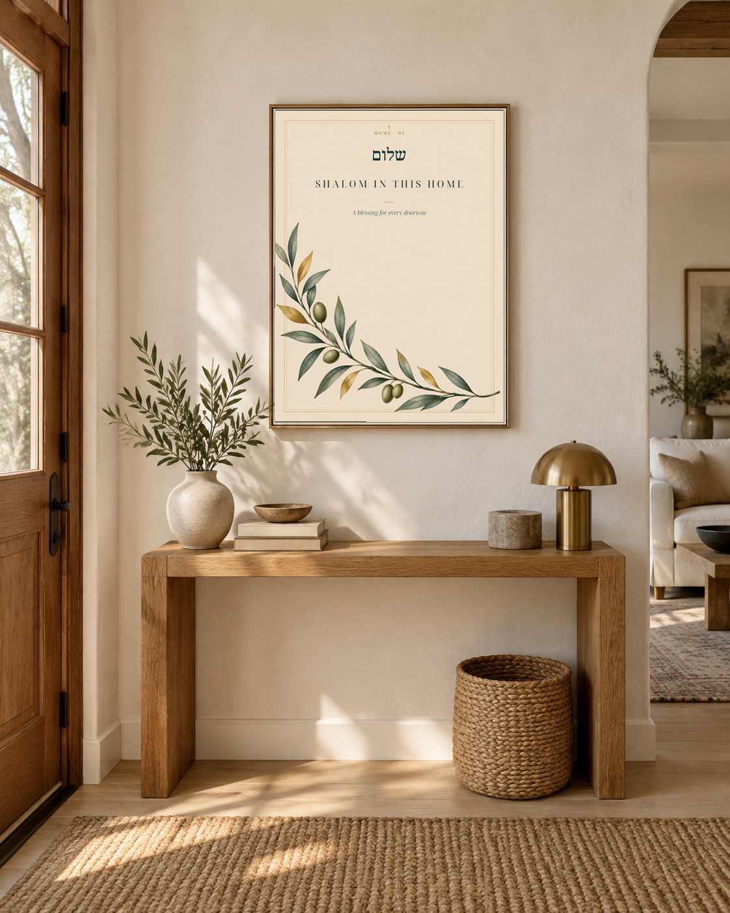
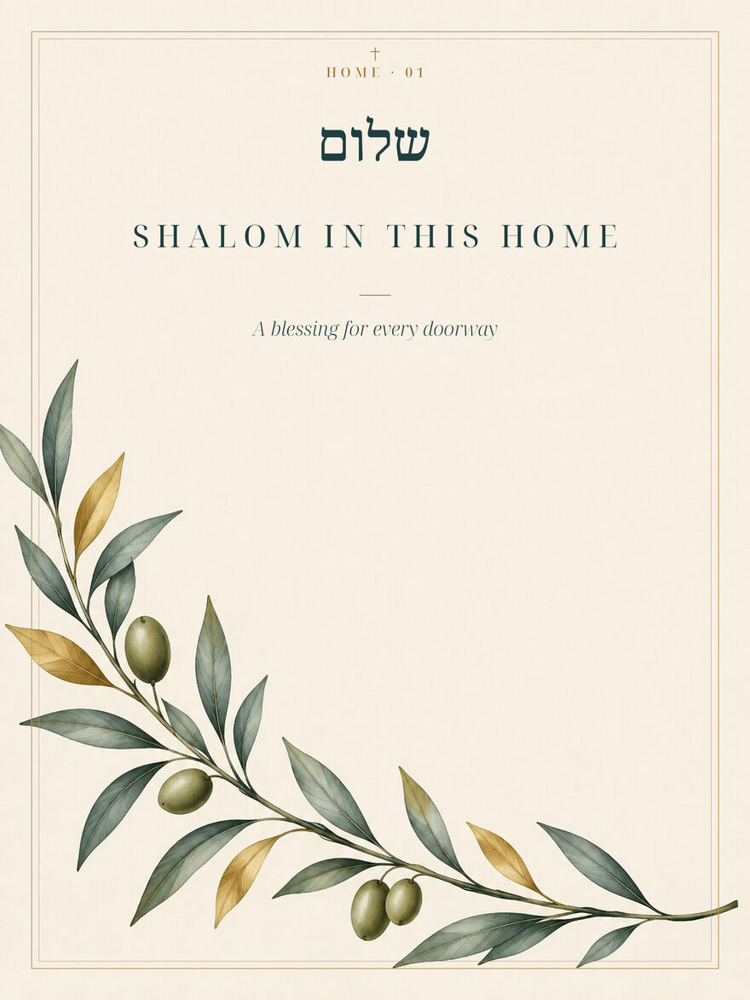
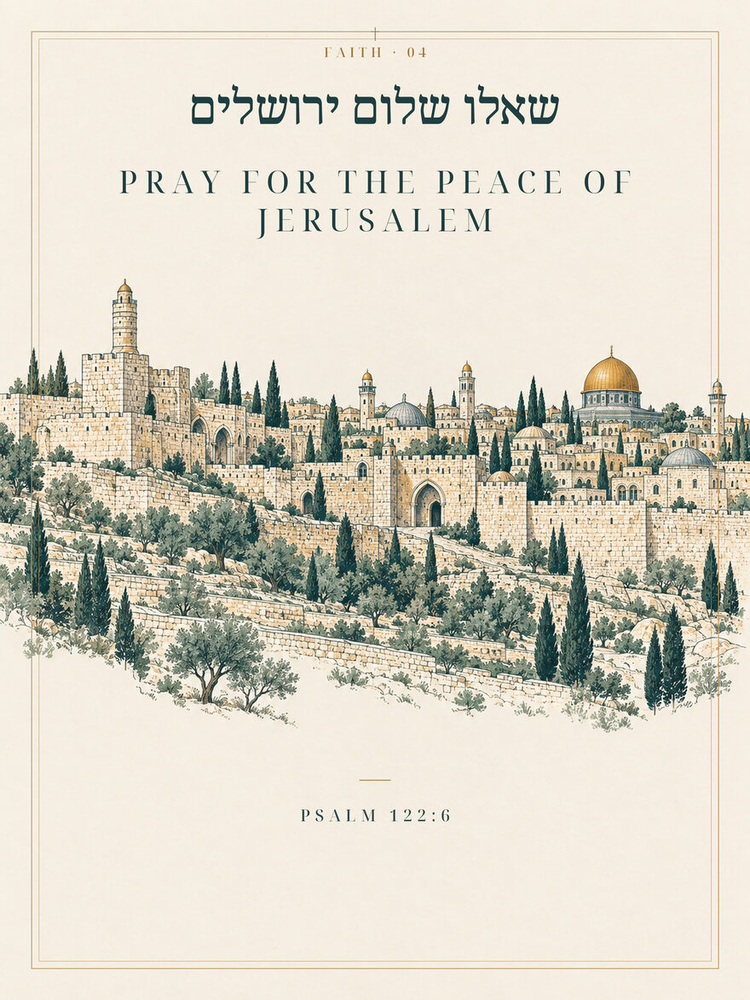
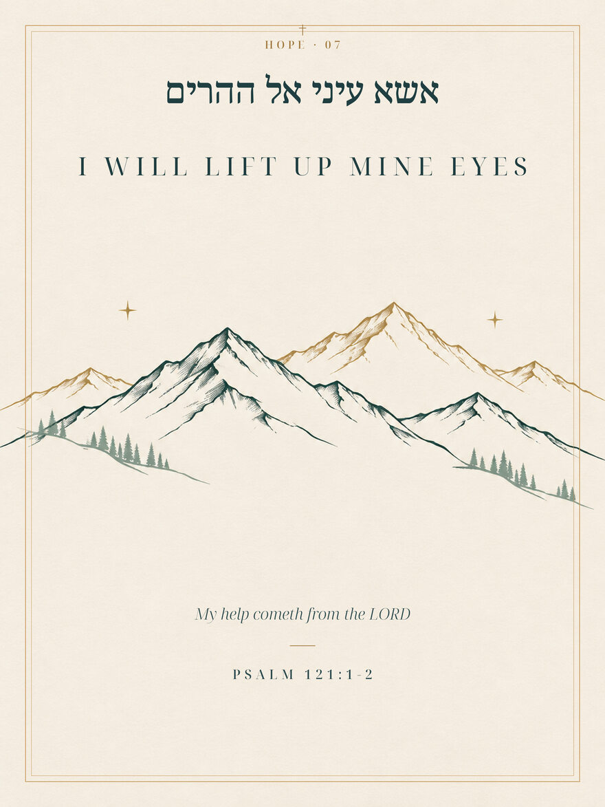
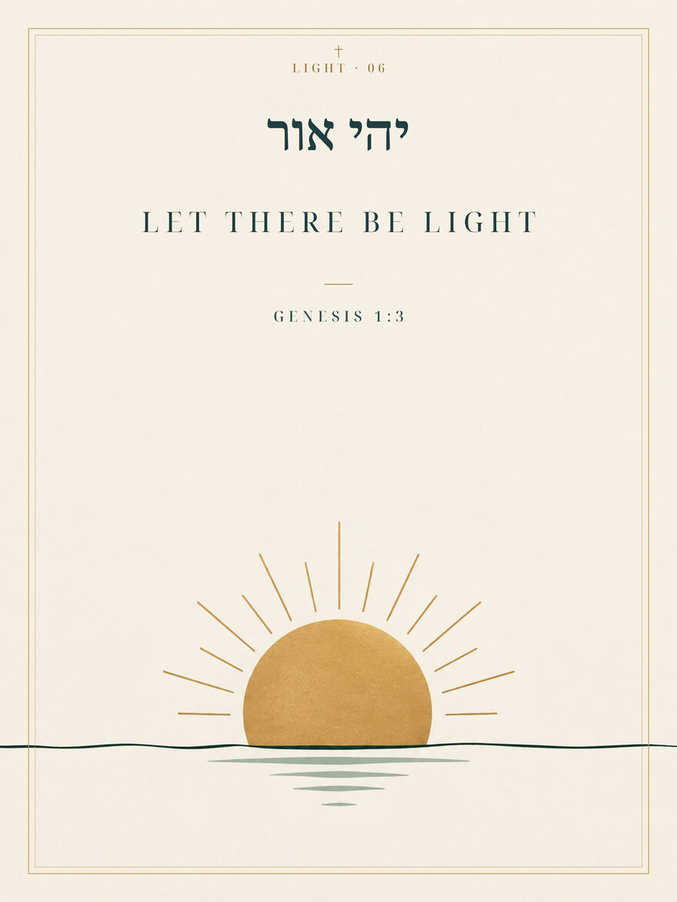
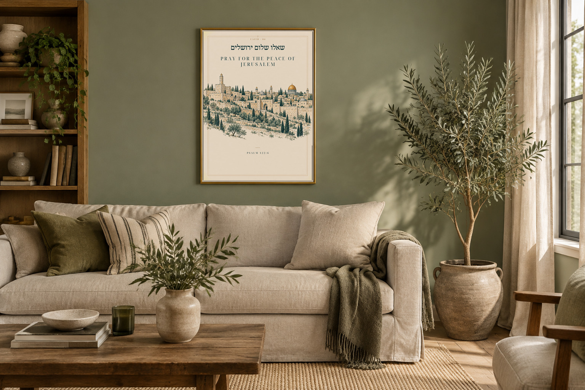

THE IDEA
Old words.
A new place to belong.
BETHEL & BRASSבית · שלום · אור
SCRIPTURE · HOME · HERITAGE
Art to live with. Words to carry with you. A collection rooted in ancient language and made for the rooms where life unfolds.
Explore the collection
Old words.
A new place to belong.
AN INTRODUCTION TO THE COLLECTION





Made to feel
at home.
ABOUT BETHEL & BRASS
Bethel & Brass is a two-owner studio building a collection of wall art in Hebrew and English. We draw on scripture, greetings and the language of home, giving each its own place and its own honest attribution.
Some works quote a verse. Others adapt a phrase or offer a greeting. Every piece is made to invite a closer look and a more thoughtful room.
Something beautiful
is taking shape.